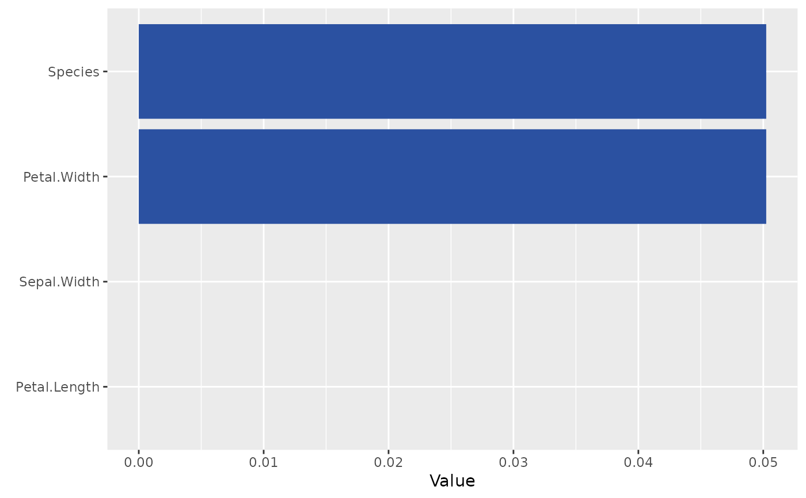
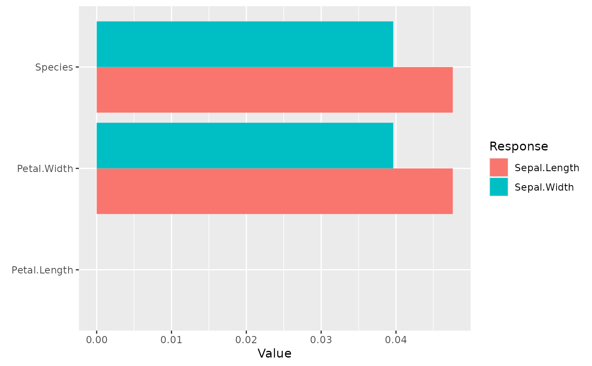

Friedman and Popescu's \(H^2_j\) statistics of overall interaction strength per
feature extracted from the result of interact(), see Details.
By default, the results are plotted as barplot. Set plot = FALSE to get numbers.
H2_overall(object, ...)
# S3 method for default
H2_overall(object, ...)
# S3 method for interact
H2_overall(
object,
normalize = TRUE,
squared = TRUE,
sort = TRUE,
top_m = 15L,
eps = 1e-08,
plot = TRUE,
fill = "#2b51a1",
...
)Object of class "interact".
Further parameters passed to geom_bar().
Should statistic be normalized? Default is TRUE.
Should squared statistics be returned? Default is TRUE.
Should results be sorted by the size of the statistic? Default is TRUE.
Multioutput predictions are sorted by row means.
How many statistics should be shown? By default 15.
Set to Inf to show all.
Threshold below which numerator values are set to 0.
Should results be plotted as barplot? Default is FALSE.
Color of bar (only for univariate statistics).
A matrix of statistics (one row per variable, one column per prediction dimension),
or a "ggplot" object (if plot = TRUE).
The logic of Friedman and Popescu (2008) is as follows:
If there are no interactions involving feature \(x_j\), we can decompose the
(centered) prediction function \(F\) into the sum of the (centered) partial
dependence \(F_j\) on \(x_j\) and the (centered) partial dependence
\(F_{\setminus j}\) on all other features \(\mathbf{x}_{\setminus j}\), i.e.,
$$
F(\mathbf{x}) = F_j(x_j) + F_{\setminus j}(\mathbf{x}_{\setminus j}).
$$
Correspondingly, Friedman and Popescu's \(H^2_j\) statistic of overall interaction
strength is given by
$$
H_{j}^2 = \frac{\frac{1}{n} \sum_{i = 1}^n\big[F(\mathbf{x}_i) -
\hat F_j(x_{ij}) - \hat F_{\setminus j}(\mathbf{x}_{i\setminus j})
\big]^2}{\frac{1}{n} \sum_{i = 1}^n\big[F(\mathbf{x}_i)\big]^2}
$$
(check partial_dep() for all definitions).
Remarks:
Partial dependence functions (and \(F\)) are all centered to (possibly weighted) mean 0.
Partial dependence functions (and \(F\)) are evaluated over the data distribution. This is different to partial dependence plots, where one uses a fixed grid.
Weighted versions follow by replacing all arithmetic means by corresponding weighted means.
Multivariate predictions can be treated in a component-wise manner.
Due to (typically undesired) extrapolation effects of partial dependence functions, depending on the model, values above 1 may occur.
\(H^2_j = 0\) means there are no interactions associated with \(x_j\). The higher the value, the more prediction variability comes from interactions with \(x_j\).
Since the denominator is the same for all features, the values of the test statistics can be compared across features.
H2_overall(default): Default method of overall interaction strength.
H2_overall(interact): Overall interaction strength from "interact" object.
Friedman, Jerome H., and Bogdan E. Popescu. "Predictive Learning via Rule Ensembles." The Annals of Applied Statistics 2, no. 3 (2008): 916-54.
# MODEL 1: Linear regression
fit <- lm(Sepal.Length ~ . + Petal.Width:Species, data = iris)
inter <- interact(fit, v = names(iris[-1]), X = iris, verbose = FALSE)
H2_overall(inter, plot = TRUE)

# MODEL 2: Multi-response linear regression
fit <- lm(as.matrix(iris[1:2]) ~ Petal.Length + Petal.Width * Species, data = iris)
v <- c("Petal.Length", "Petal.Width", "Species")
inter <- interact(fit, v = v, X = iris, verbose = FALSE)
H2_overall(inter, plot = TRUE)
